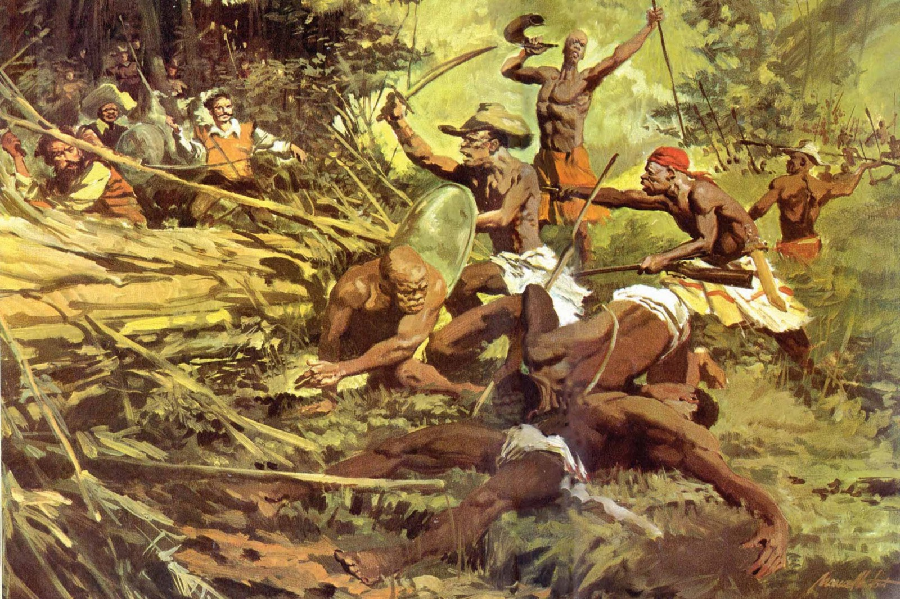

O Quilombo dos Palmares foi uma grande comunidade formada principalmente por pessoas negras escravizadas que fugiam das fazendas e buscavam liberdade, organizando uma sociedade própria e autônoma.
Ele existiu na região que hoje corresponde ao estado de Alagoas, durante o século XVII, em uma área de difícil acesso que ajudava na sua proteção contra ataques.
Sua principal importância está no fato de ter sido um dos maiores símbolos de resistência à escravidão no Brasil, mostrando a luta dos africanos e seus descendentes por liberdade, dignidade e melhores condições de vida.
